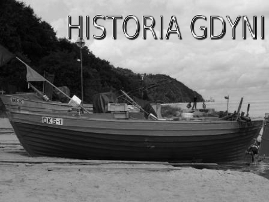
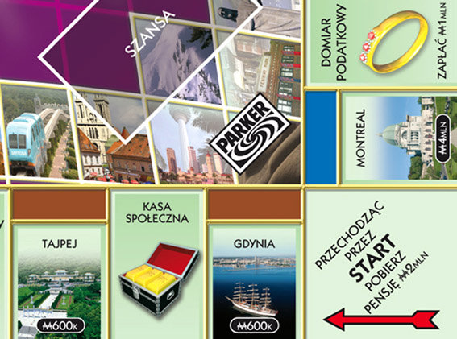
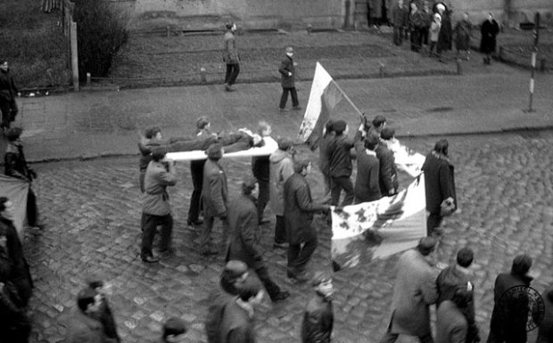
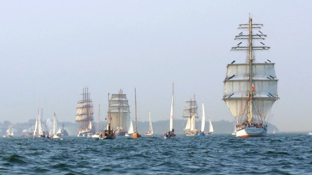

Dawno, dawno temu, kiedy dzieci by³y grzeczne,
a powietrze czyste znajdowa³a siê nad Ba³tykiem ma³a rybacka osada - Gdynia.
Przez wieki jakby zapomniana przez
wszystkich,a¿ do dnia 10 lutego 1926,
kiedy to ta ma³a wioska rybacka
dziêki pracy, oddaniu i marzeniom
sta³a siê jednym z najwspanialszych
miast w Polsce, jak i na ¶wiecie
(za co¶ jeste¶my przecie¿
na planszy Monopoly).

Lecz ta sielanka nie trwa³a
d³ugo i w roku 1939 rozpoczê³a siê II Wojna ¦wiatowa. Gdynianie dzielnie bronili siê,
lecz ¿o³nierzy wroga by³o
wiêcej i byli lepiej wyposa¿eni.
Po upadku obroñców nazwa miasta Gdynia zosta³a zmieniona na Gotenhafen. By³ to dla
marynarzy trzeciej rzeszy jeden
z najbezpieczniejszych portów
a¿ do 1944 roku.
Wiêkszo¶æ Polaków
zosta³a przewieziona w g³±b kraju.
Druga wojna zniszczy³a port i to,
dopiero co wschodz±ce miasto.
Po wojnie miasto liczy³o
zaledwie 74 tysiêcy mieszkañców.
Dziêki wielkiej pracy w³o¿onej
w odbudowê miasta, Gdynia znów
stanê³a na nogi. Lecz nadszed³ jeden
z najczarniejszych dni
w historii - grudzieñ 1970r.
Kiedy stoczniowcy wyszli, aby zaprotestowaæ przeciwko
istniej±cemu porz±dkowi politycznemu.
Protest zosta³ krwawo st³umiony.
Do dzi¶ o tych wydarzeniach przypomina
nam pomnik ofiar grudnia 70, który stoi w
pobli¿u stoczni.

Dzisiaj
Gdynia to jedno z najlepiej rozwijaj±cych
siê miast w Polsce. Co roku organizuje siê wspania³e imprezy masowe
m.in. piwo, muzyka i pe³ne pole
namiotowe, czyli Heineken Open'er Festiwal oraz dzieci kwiaty
peace and love - Globaltica.
Na gdyñskim skwerze Ko¶ciuszki
mo¿emy podziwiaæ zloty ¿aglowców
z ca³ego ¶wiata, organizowane w
lipcu oraz stoj±ce tam, na co dzieñ
okrêt ORP B³yskawica oraz takie
jednostki jak Dar m³odzie¿y
czy Dar pomorza.
